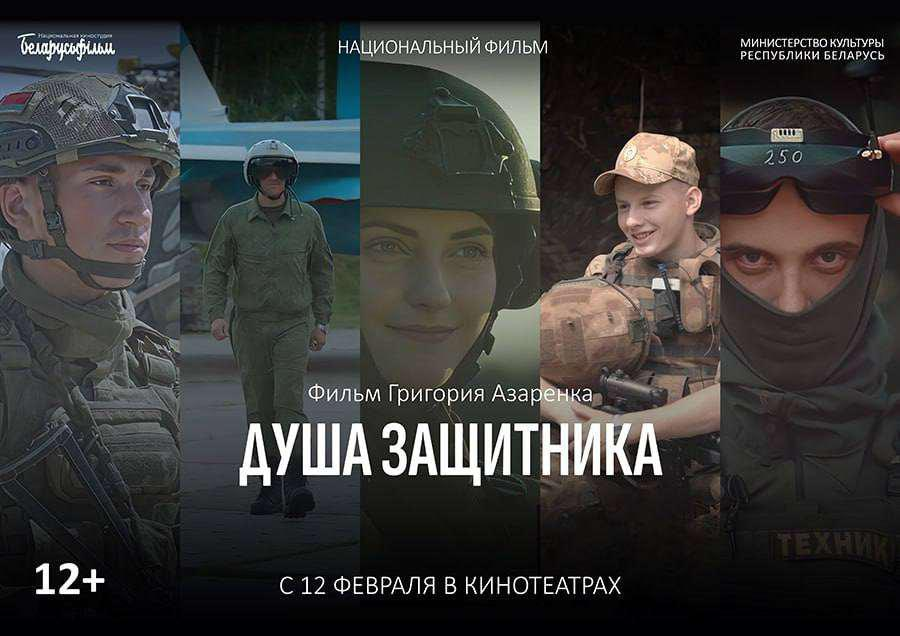
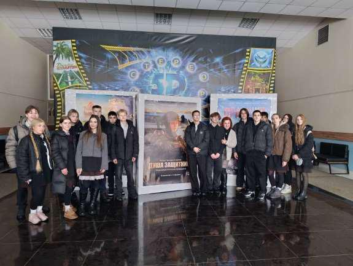
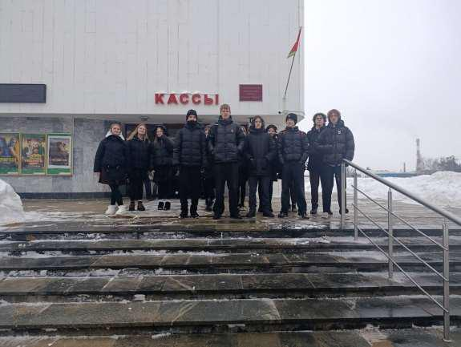

ДУША ЗАЩИТНИКА
12 февраля учащиеся 8-10-х классов Государственного учреждения образования «Гимназия №1 г. Борисова» стали участниками премьеры документального фильма Григория Азарёнка «Душа защитника».

Фильмы патриотической направленности играют важную роль в воспитании молодежи и формировании у них гражданской позиции. Они помогают учащимся осознать значимость истории своей страны, ценности свободы и независимости, а также прививают чувство гордости за достижения предков. Через последующие обмен мнениями и взглядами у учащихся развиваются критическое мышление и навыки аргументации, которые в последующем выливаются в активное участие в жизни общества и формируют уважение к защитникам Родины.

В основе сюжета киноленты лежит смелость и мужество людей, которые защищают нашу страну. Бойцы и командиры Вооруженных Сил, пограничных и внутренних войск МВД Беларуси показываются с разных сторон: при выполнении боевых задач, в мирной жизни и в откровенных беседах с автором. Они служат не ради наград, а ради мира на белорусской земле. Их души полны любви к Родине и людям, и эта любовь делает их сильными и непобедимыми.
